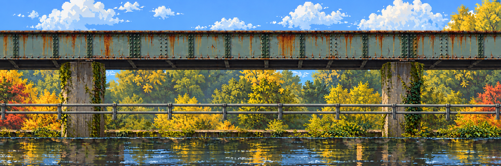
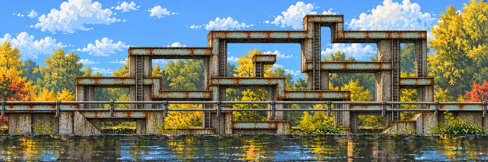
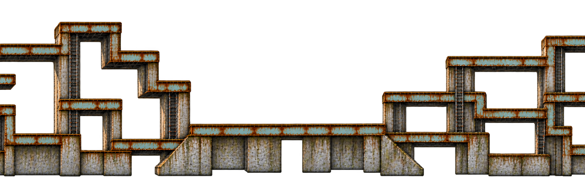
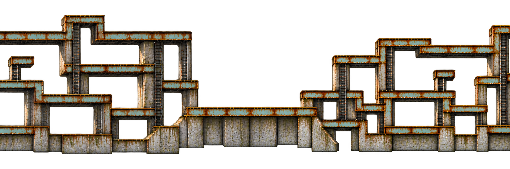

23 October · replacement location · art and interaction proposal
One creek. Several wrong turns. A way through.
The steel, creek, trees and grey rails stay familiar. Algorithms turn the architecture into climbing towers, return paths and tempting dead ends. A quiet entry opens into exploration, then a spacious boss clearing and an exit.
1. Original photographic collage → designed side elevation
 Materials and landmarks, not a surveyed map or camera angle to copy.
Materials and landmarks, not a surveyed map or camera angle to copy.
Clean location. Five scenery roles are identical in both states.
Corrupted architecture. Nature stays registered; the structure has its own layer and route proposal.2. Follow the location across three banners
Loading the registered layers…
Overview: entry / first climb → branching towers / return route → boss clearing / exit. Gold lines mark x=2160 and x=4320; amber dashed lines mark both edges of each 512-pixel repair. The overview follows the same state and layer choices.
Route key and scope
Gold = walk intent; blue = ladder; coral = proposed jump; lilac = exploration spur. The 18×32 marker is a scale guide. The graph checks entry-to-boss-to-exit reachability and returnable dead ends. It does not prove collision, headroom, jump timing or combat. Exploration spurs include intermediate anchors; verify their collision and clearance. A boss clearing is reserved space, not an implemented encounter.
Visual 404 cuts alter architecture presentation only. A physical route swap needs a safe checkpoint, telegraph, recovery and reset. Do not remove a floor beneath the player.
3. Inspect all seven roles, across the whole stage
Every role has left, center and right exports in one coordinate space. Masonry and traversal are disjoint masks of the same repaired source; they are never separately regenerated. All seven recompose exactly into the displayed master.
4. Staggered join windows

Left–center: copy only context x824…1336 to world x1904…2416.
Center–right: copy only context x824…1336 to world x4064…4576.Repair the composed structure first, then separate its registered masks. Fixed scenery uses mirrored neighboring panels, so shared edge samples match. The bounded-copy proof precedes an explicit red-matte cleanup step; these are separate operations in the report.
This replaces the former combined study at the same address. Registration and recomposition pass; final art approval, precise platform colliders, movement, object rigs and a physics playtest remain open. Static masonry cuts are not independently reconstructed movable columns. The water texture includes old painted color; the optional reflection preview adds the currently visible scene through its alpha, not final water rendering.